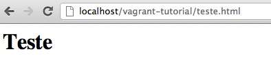

Vagrant: Fácil E útil
Salve pessoal!
Hoje eu quero passar uma dica para fazer você parar com aquela desculpa “Na minha máquina tá funcionando”. Para isso vou apresentar para vocês o Vagrant http://vagrantup.com/.
O Vagrant é uma ferramenta que te ajuda na criação da infraestrutura para o seu projeto, usando para isso uma máquina virtual. Mas aí você pensa: “Uma máquina virtual para cada projeto?? Isso vai dar trabalho”. A grande jogada é que o Vagrant deixa muita coisa invísivel, deixando com que você se preocupe apenas com seu código. É uma máquina virtual reduzida e portável facilmente. Para cada projeto você pode deixar um ambiente diferente rodando, um com PHP 4, outro com PHP 5, um em Debian outro em CentOS, você escolhe.
Instalação
Para criar suas máquinas vituais o Vagrant precisa do Virtual Box, um cliente de máquinas virtuais da Oracle bastante conhecido. Basta instalar! Você não precisa deixar o programa aberto para usar o Vagrant. Você pode fazer o download do Virtual box no seguinte link https://www.virtualbox.org/wiki/Downloads.
Instalado o Virtual Box, faça o download do Vagrant e o instale. Procure pela versão do seu sistema operacional no seguinte link http://downloads.vagrantup.com/.
Configurando e rodando
Outra coisa que o Vagrant utiliza para criar suas máquinas virtuais são Boxes, ou no singular uma Box. Essa Box funciona como uma imagem, uma iso do sistema operacional que você quer instalar. Então antes de qualquer coisa vamos adicionar uma box, para que você a tenha disponível para criar seu primeiro teste com vagrant.
Abra o console do seu sistema operacional, seja o cmd no windows ou o terminal no linux ou mac e entre com o comando
vagrant box add lucid32 http://files.vagrantup.com/lucid32.box
Essa é a box de exemplo que o Quick Start do Vagrant traz para a gente, onde o primeiro parâmetro que vem após add é o nome que estamos dando a nossa box e o segundo o caminho da onde faremos o download. Esse comando vai trazer uma Box do Ubuntu Lucid. Aqui eu recomendo que caso esteja começando com o Vagrant faça um teste usando essa box, mas caso queira avançar um pouco mais, aqui está uma lista de algumas boxes disponíveis por aí http://www.vagrantbox.es/.
Box preparada, que tal colocar nosso ambiente para rodar?
Crie uma pasta para o seu projeto no seu ambiente de trabalho e acesse ela via console.
Entre com o seguinte comando:
vagrant init lucid32
Caso tenha usado outro nome para a sua box no passo anterior, substitua no lugar de lucid32 no comando acima.
Como o próprio comando se explica, ele prepara uma configuração inicial para você usando um arquivo que ele cria em seu diretório chamada Vagrantfile. Dentro desse arquivo existe algumas configurações como a box a ser usada entre outros.
Agora é só subir o ambiente.
vagrant up
Ao subir o ambiente o vagrant irá realmente criar sua máquina virtual e configurar as coisas para você. Acompanhe as saídas dos comandos para detalhes.
Tudo pronto!
Testando
Chegou a hora da verdade. Crie um arquivo html com qualquer conteúdo dentro da pasta do seu projeto.
Por exemplo vamos criar um arquivo chamado teste.html com o seguinte conteúdo
<h1>Teste</h1>
Agora acesse via browser a pasta do seu projeto e o arquivo que criou.

Esse HTML está dentro da sua máquina virtual e você está rodando a partir do seu localhost. Muito bom não?
{kind=link}
Alguns pontos:
- Note que você nem abriu essa máquina virtual para trabalhar dentro dela. Você está trabalhando como se ela fosse uma pasta local em sua máquina, essa é a beleza da coisa. Você pode deixar isso melhor organizado usando a opção share_folder do arquivo de configuração Vagrantfile
- Mostrei aqui um teste com HTML como também é mostrado no Quick Start do Vagrant, mas você pode instalar o que quiser dentro da sua máquina virtual seja PHP, Java, Python e rodar o que bem entender. Apenas atente para fazer direcionamento das portas para que isso funcione de acordo. Veja a opção forward_port do arquivo de configuração Vagrantfile
- Detalhes com todas as opções disponíveis para o Vagrantfile você encontra na documentação oficial http://vagrantup.com/v1/docs/vagrantfile.html
SSH
E que tal um acesso SSH na sua máquina virtual?
Sim, o Vagrant te traz isso!
Se você está no Mac ou Unix apenas entre com o comando abaixo e você está dentro.
vagrant ssh
Para usuários do windows será necessário o uso do puttygen, putty e algumas configurações em cima deles. Nada muito complicado para quem já trabalha com SSH no seu dia a dia.
Após acesar o ssh via vagrant, você sai no seu home /home/vagrant.
Os arquivos que você criou dentro da pasta do seu projeto podem ser encontrados em /vagrant.
Distribuindo seu ambiente
Está trabalhando com alguém em um projeto? Que tal enviar esse ambiente que você criou no Vagrant para essa pessoa, para que vocês trabalhem em cima do mesmo ambiente?
Para isso basta criar um pacote da sua máquina virtual com o seguinte comando
vagrant package
Ao final do processo você terá um arquivo chamado package.box.
Para que alguém ou você mesmo o utilize, basta seguir os passos apresentados aqui como se esse arquivo fosse uma box que você vai fazer o download. Sem mais.
Resumo
Apresentei aqui uma geral sobre o Vagrant, porque ele é útil, porque é interessante usá-lo e etc. Fizemos um exemplo e vimos como distribuir esse ambiente com mais pessoas. Cobri aqui o básico dessa sensacional ferramenta para você configurar o ambiente de seus projetos individualmente.
Você pode ir mais além e criar várias máquinas virtuais que se comunicam entre si e outros. Para isso leia a documentação http://vagrantup.com/v1/docs/index.html e se intere do que mais o Vagrant pode fazer por você.
É isso pessoal.
Abraços.